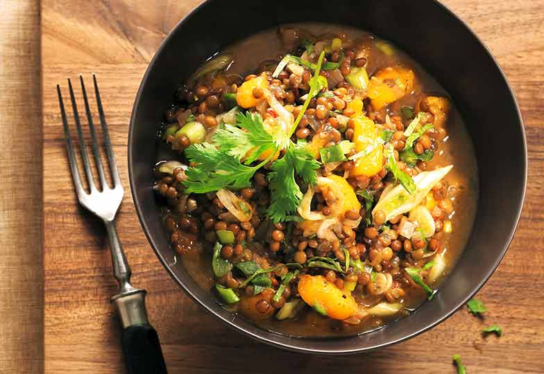

Great northern lentils

Discover this delicious recipe for great northern lentils!
A comforting and tasty dish, made with green lentils, bacon, onions, and potatoes,
all flavored with herbs and spices. Perfect for a friendly meal with family or friends while maintaining rich nutritional properties.
Ingredients
- 100g smoked bacon cubes
- 200g diced ham
- 1 tbsp Planta margarine
- 1 chopped onion
- 2 crushed garlic cloves
- 1 sliced leek
- 1 bunch of chopped parsley
- 250g green or brown lentils
- 1 apple, quartered, and sliced
- 2 tbsp raisins
- 4 small peeled and quartered potatoes, then sliced
- 1 dl white wine
- 4 to 5 dl broth
- salt, pepper, powdered condiment, a little thyme
- 1 pinch of Cayenne pepper
- 1 pinch of powdered cloves
- grated zest of 1/2 lemon
- 4 tbsp sour half-cream
Steps
- Heat in a casserole, add bacon and diced ham, let it brown, then lower the heat.
- Gradually add onion, garlic, leek, parsley, and sauté for a moment
- Add lentils, apple, raisins, potatoes, white wine, and broth. Lentils should be just covered.
- Season, cover, and let cook for 50 to 60 minutes over low heat.
Practical tip
This spicy preparation can be enriched with various sausages and salami. Cut them into thick slices and place them on the lentils 15 to 20 minutes before the end of cooking.